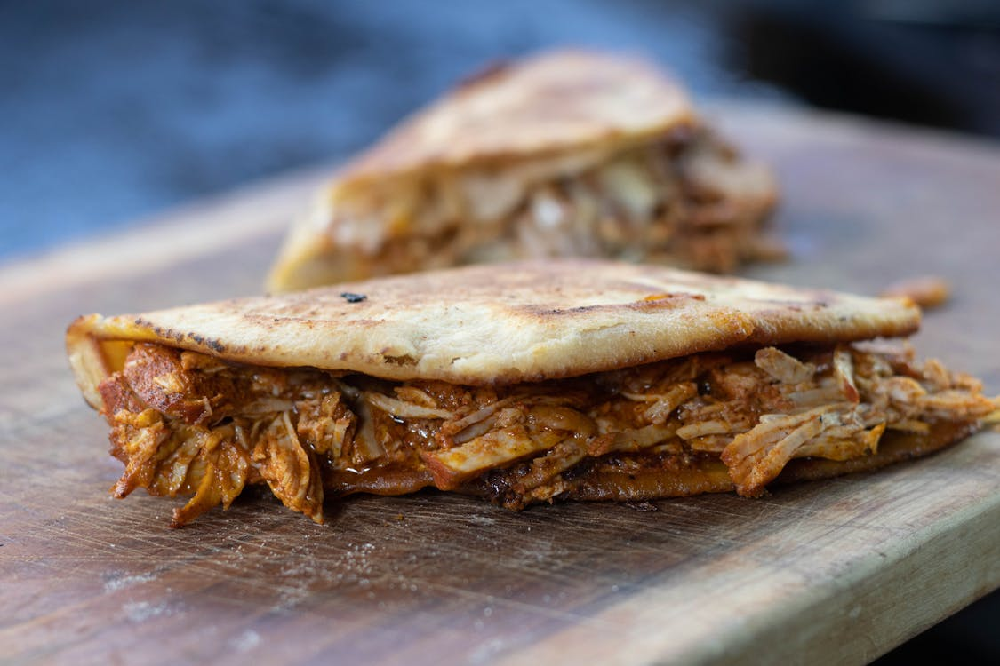

Arepas
Preparar una mezcla de maíz y agua, formar discos y cocinarlos hasta que estén dorados.
Preparar una mezcla de maíz y agua, formar discos y cocinarlos hasta que estén dorados.
Preparar una sopa espesa con pollo, tres tipos de papas y guasca.
Servir una variedad de carnes, arroz, frijoles, plátano y huevo en un solo plato.
Rellenar masa de maíz con carne, papa o queso y freír hasta que estén doradas.

Cocinar cerdo relleno de arroz, guisantes y especias hasta que esté crujiente.